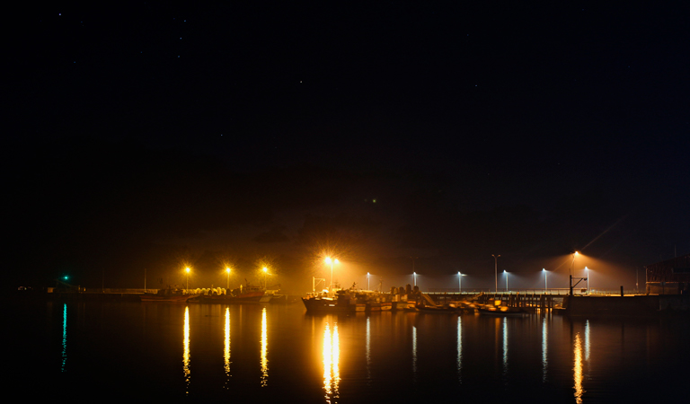
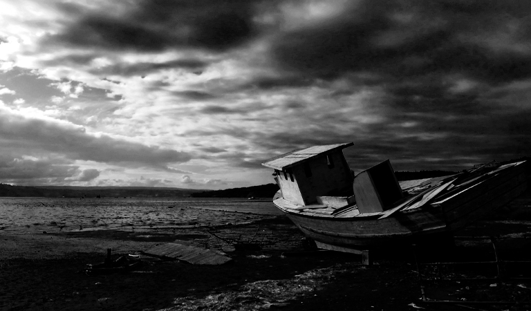
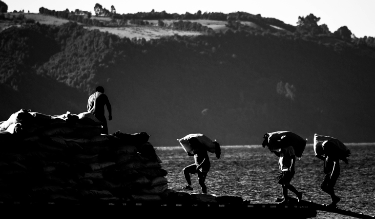

Surcando los mares digitales de la Patagonia Insular.
Radio Caleuche es un medio de comunicación multiplataforma cuya finalidad es potenciar a Chiloé y su cultura, integrando también una mirada comunitaria y de actualidad sobre el territorio insular.

Ser un centro cultural y vitrina de la actualidad insular.

Entregar una propuesta de actualidad musical e informativa que potencie la interacción comunicativa.

Donde hay palabra humana, hay comunicación; una radio es un centro cultural.
Parrilla semanal de la programación de Radio Caleuche
Entrevistas y estado del arte en Chiloé.
Música electrónica nueva e independiente.
Análisis de discografías y cultura Rock.